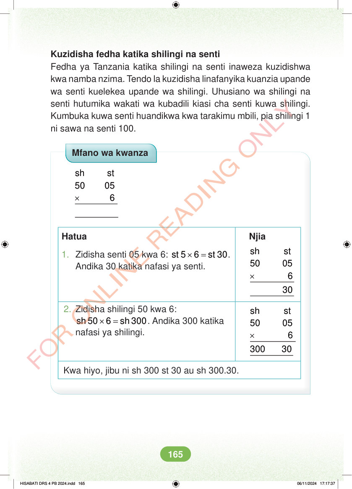

Kuzidisha fedha katika shilingi na senti Fedha ya Tanzania katika shilingi na senti inaweza kuzidishwa kwa namba nzima. Tendo la kuzidisha linafanyika kuanzia upande wa senti kuelekea upande wa shilingi. Uhusiano wa shilingi na senti hutumika wakati wa kubadili kiasi cha senti kuwa shilingi. Kumbuka kuwa senti huandikwa kwa tarakimu mbili, pia shilingi 1 ni sawa na senti 100. Mfano wa kwanza × sh st 50 05 6 Hatua Njia 1. Zidisha senti 05 kwa 6: × = st 5 6 st 30. Andika 30 katika nafasi ya senti. × sh st 50 05 6 2. Zidisha shilingi 50 kwa 6: × = sh 50 6 sh 300. Andika 300 katika nafasi ya shilingi. × sh st 50 05 6 300 30 Kwa hiyo, jibu ni sh 300 st 30 au sh 300.30. HISABATI DRS 4 PB 2024.indd 165 HISABATI DRS 4 PB 2024.indd 165 06/11/2024 17:17:37 06/11/2024 17:17:37